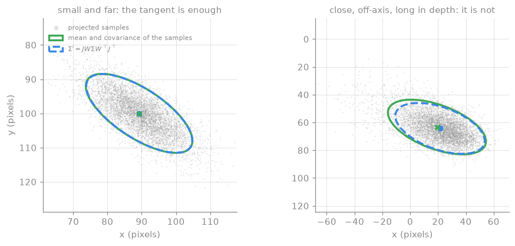
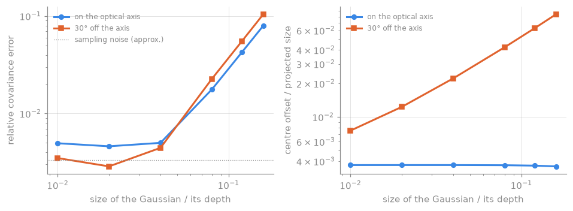
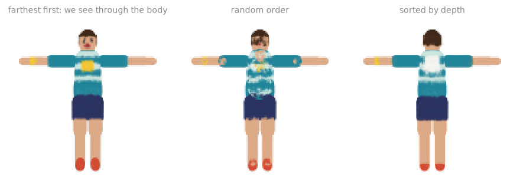
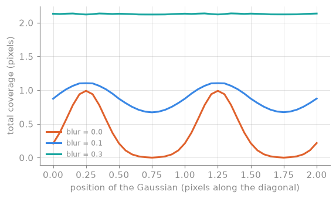
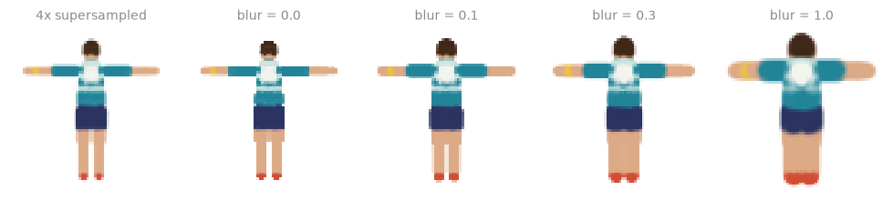
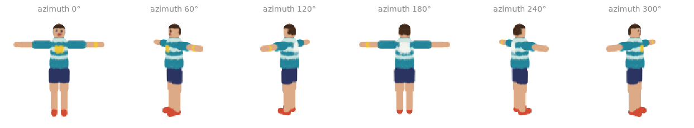

From 3D to the image: how a camera flattens a Gaussian#
What you will learn
How a 3D Gaussian is stored (a centre, three axis lengths, a quaternion) and how a pinhole camera sees a point.
Why a projected Gaussian is only approximately a Gaussian, and the linearisation \(\Sigma' = J W \Sigma W^\top J^\top\) that splatting uses.
How good that approximation is, measured against sampling, and where it gets worse.
What depth sorting and the low-pass term do, shown by leaving each one out.
Prerequisites: Lesson 2a. You need the chain rule for a function of several variables (a Jacobian matrix).
Lesson 2a rendered flat Gaussians that already lived in the image. A person lives in 3D. This lesson puts the Gaussians in space and adds the one step that was missing: a camera that turns each 3D Gaussian into a 2D one. After that step the compositor of Lesson 2a runs unchanged.
1. A 3D Gaussian is an ellipsoid#
In 3D the blob \(G(X) = \exp(-\tfrac12 (X-\mu)^\top \Sigma^{-1} (X-\mu))\) has a centre \(\mu \in \mathbb{R}^3\) and a 3 x 3 covariance. Its 1-sigma surface is an ellipsoid with three perpendicular axes. The construction is the one from Lesson 2a with one more dimension:
A 2D rotation is one angle. A 3D rotation needs more care. Splatting stores it as a quaternion \(q = (w, x, y, z)\): four numbers, of which only the direction matters. Dividing \(q\) by its length gives a unit quaternion, and every unit quaternion is a rotation. So, as with the log axis lengths, an optimiser can push the four numbers anywhere and the result is still valid. A rotation by the angle \(\phi\) about the unit axis \(a\) is \(q = (\cos\tfrac{\phi}{2},\ \sin\tfrac{\phi}{2}\, a)\).
def quat_to_rotmat(q):
"""Quaternions (..., 4) as (w, x, y, z), any length -> rotation matrices (..., 3, 3)."""
w, x, y, z = (q / q.norm(dim=-1, keepdim=True)).unbind(-1)
R = torch.stack([1 - 2 * (y * y + z * z), 2 * (x * y - w * z), 2 * (x * z + w * y),
2 * (x * y + w * z), 1 - 2 * (x * x + z * z), 2 * (y * z - w * x),
2 * (x * z - w * y), 2 * (y * z + w * x), 1 - 2 * (x * x + y * y)], -1)
return R.reshape(q.shape[:-1] + (3, 3))
def covariance_3d(scales, quat):
"""Sigma = R S S^T R^T from axis lengths (N, 3) and quaternions (N, 4)."""
M = quat_to_rotmat(quat) * scales[..., None, :]
return M @ M.transpose(-1, -2)
g = cu.generator(0)
q = cu.randn(5, 4, generator=g) # five arbitrary quaternions, not normalised
R = quat_to_rotmat(q)
print("R R^T = I up to", f"{(R @ R.transpose(-1, -2) - torch.eye(3)).abs().max().item():.1e}",
"| det R =", [round(d, 4) for d in torch.linalg.det(R).tolist()])
s = 0.02 + 0.1 * cu.rand(5, 3, generator=g)
Sigma = covariance_3d(s, q)
print("eigenvalues of Sigma equal the squared axis lengths:",
torch.allclose(torch.linalg.eigvalsh(Sigma), (s ** 2).sort(dim=-1).values, atol=1e-6))
assert torch.allclose(R @ R.transpose(-1, -2), torch.eye(3).expand(5, 3, 3), atol=1e-5)
assert torch.allclose(Sigma, cu.covariance_3d(s, q), atol=1e-7) # same as the library
R R^T = I up to 6.0e-07 | det R = [1.0, 1.0, 1.0, 1.0, 1.0]
eigenvalues of Sigma equal the squared axis lengths: True
A quarter turn about the vertical axis is \(q = (\cos 45°, 0, \sin 45°, 0)\). It should carry the x axis to \(-z\):
quarter = torch.tensor([math.cos(math.pi / 4), 0.0, math.sin(math.pi / 4), 0.0])
print("x axis after a quarter turn about y:", [round(v, 3) for v in (quat_to_rotmat(quarter) @ torch.tensor([1.0, 0.0, 0.0])).tolist()])
x axis after a quarter turn about y: [-0.0, 0.0, -1.0]
2. The pinhole camera#
A pinhole camera is a point (the centre of projection) and an image plane in front of it. A point in space is drawn where the straight line from it to the centre crosses the plane.
![Side view of a pinhole camera: a point at (x, z) projects to f x / z on the image plane.]()
![Side view of a pinhole camera: a point at (x, z) projects to f x / z on the image plane.]()
Two steps take a world point \(X\) to a pixel.
World to camera. The camera has its own axes: x to the right, y down, z forward into the scene. A rotation \(W\) and a translation \(t\) change coordinates: \(X_c = W X + t = (x, y, z)\). The third coordinate \(z\) is the depth.
Camera to pixel. Divide by the depth and scale by the focal length. The principal point \((c_x, c_y)\) is the pixel where the optical axis meets the image:
cu.Camera stores \(W\) as cam.R, \(t\) as cam.T, and the intrinsics fx, fy, cx, cy in pixels.
def project_points(X, cam):
"""World points (N, 3) -> pixels (N, 2), depth (N,) and camera coordinates (N, 3)."""
Xc = X @ cam.R.T.to(X.dtype) + cam.T.to(X.dtype) # X_c = W X + t, for every row
x, y, z = Xc.unbind(-1)
return torch.stack([cam.fx * x / z + cam.cx, cam.fy * y / z + cam.cy], -1), z, Xc
cam = cu.orbit_camera(azimuth_deg=30, size=64) # on a circle around the person, looking at the hips
_, joints = cu.forward_kinematics(*cu.zero_pose()) # the 17 joints of the toy skeleton, as test points
uv, depth, _ = project_points(joints, cam)
print("camera centre in the world:", [round(v, 2) for v in cam.center.tolist()], "| focal length", round(cam.fx, 1), "px")
print("head -> pixel", [round(v, 1) for v in uv[cu.joint_index('head')].tolist()], "at depth", round(depth[cu.joint_index('head')].item(), 2), "m")
print("l_ankle -> pixel", [round(v, 1) for v in uv[cu.joint_index('l_ankle')].tolist()])
assert torch.allclose(uv, cam.project(joints)[0], atol=1e-4)
camera centre in the world: [2.09, 1.29, 3.62] | focal length 128.3 px
head -> pixel [32.0, 12.3] at depth 4.14 m
l_ankle -> pixel [34.6, 57.6]
The head is near the top of the image (small y) and the ankle near the bottom, because the image y axis points down.
3. Projecting a whole Gaussian: the local linear map#
A Gaussian is more than its centre. Where does the rest of it go? Take the honest route first: draw many samples from the 3D Gaussian, project every sample as a point, and look at the cloud in the image.
def sample_and_project(mean, Sigma, cam, n=200_000, seed=0):
"""Monte Carlo: sample the 3D Gaussian, project each sample. Returns pixels, their mean and covariance."""
L = torch.linalg.cholesky(Sigma)
X = mean + cu.randn(n, 3, generator=cu.generator(seed), dtype=torch.float64) @ L.T
uv, z, _ = project_points(X, cam)
assert z.min() > 0, "a sample fell behind the camera"
return uv, uv.mean(0), torch.cov(uv.T)
# a camera at the origin looking along +z, with a wide lens, in double precision
wide = cu.look_at(eye=(0.0, 0.0, 0.0), target=(0.0, 0.0, 1.0), fov_deg=70, size=200)
dd = torch.float64
far_mean, far_Sigma = torch.tensor([0.3, 0.0, 4.0], dtype=dd), covariance_3d(torch.tensor([[0.25, 0.10, 0.25]], dtype=dd), torch.tensor([[1.0, 0.0, 0.0, 0.3]], dtype=dd))[0]
near_mean, near_Sigma = torch.tensor([0.55, 0.25, 1.0], dtype=dd), covariance_3d(torch.tensor([[0.07, 0.05, 0.16]], dtype=dd), torch.tensor([[1.0, 0.0, 0.0, 0.0]], dtype=dd))[0]
cloud_far, mc_mean_far, mc_cov_far = sample_and_project(far_mean, far_Sigma, wide)
cloud_near, mc_mean_near, mc_cov_near = sample_and_project(near_mean, near_Sigma, wide)
The first Gaussian is small compared with its distance. The second is close to the camera, off to the side, and long in the depth direction. Section 4 draws both clouds. The first looks like an ellipse. The second does not: its near end is magnified more than its far end, so the cloud is lopsided. The perspective projection of a Gaussian is not a Gaussian. The compositor of Lesson 2a needs a 2D Gaussian all the same, so splatting approximates.
The approximation [Zwicker et al., 2001] replaces \(\pi\) by its tangent at the centre \(\mu_c = W\mu + t\). Near that point,
Each entry of \(J\) is a derivative you can do by hand. Moving the point sideways by one metre moves the pixel by \(f_x / z\): that is the first column. Moving it one metre away from the camera pulls the pixel towards the principal point by \(f_x\, x / z^2\): that is the last column, and it is zero on the optical axis.
A linear map of a Gaussian is a Gaussian. If \(X\) has covariance \(\Sigma\), then \(AX + b\) has covariance \(A \Sigma A^\top\). The world-to-camera step is linear (\(A = W\)), and now the projection is too (\(A = J\)):
The centre is projected as a point, with no approximation. Only the shape uses the tangent.
def projection_jacobian(Xc, cam):
"""J (N, 2, 3): derivative of the pixel position with respect to the camera-space point."""
x, y, z = Xc.unbind(-1)
zero = torch.zeros_like(z)
return torch.stack([cam.fx / z, zero, -cam.fx * x / z ** 2,
zero, cam.fy / z, -cam.fy * y / z ** 2], -1).reshape(-1, 2, 3)
def project_gaussians(mean, Sigma, cam, blur=0.0):
"""3D Gaussians -> 2D Gaussians: mean2d (N, 2), Sigma2d (N, 2, 2), depth (N,)."""
mean2d, depth, Xc = project_points(mean, cam)
JW = projection_jacobian(Xc, cam) @ cam.R.to(mean.dtype)
Sigma2d = JW @ Sigma @ JW.transpose(-1, -2) + blur * torch.eye(2, dtype=mean.dtype) # blur: section 6
return mean2d, Sigma2d, depth
First check: the hand-derived \(J\) against automatic differentiation of the projection.
Xc = torch.tensor([0.4, -0.3, 2.5], dtype=dd)
pi = lambda p: torch.stack([wide.fx * p[0] / p[2] + wide.cx, wide.fy * p[1] / p[2] + wide.cy])
J_auto = torch.autograd.functional.jacobian(pi, Xc)
J_hand = projection_jacobian(Xc[None], wide)[0]
print("J by hand:"); print(J_hand)
print("largest difference to autograd:", f"{(J_hand - J_auto).abs().max().item():.1e}")
assert torch.allclose(J_hand, J_auto, atol=1e-9)
J by hand:
tensor([[57.1259, 0.0000, -9.1401],
[ 0.0000, 57.1259, 6.8551]], device='cuda:0', dtype=torch.float64)
largest difference to autograd: 8.9e-16
Second check: our projection against the library’s, on the Gaussians of the toy person.
actor = cu.ToyActor()
means, Sigmas, colors, opacity = actor.gaussians()
m2, S2, z = project_gaussians(means, Sigmas, cam)
m2_lib, S2_lib, z_lib = cu.project_gaussians(means, Sigmas, cam, blur=0.0)
print(f"{actor.n_gaussians} Gaussians | largest differences: mean {(m2 - m2_lib).abs().max().item():.1e} px, "
f"covariance {(S2 - S2_lib).abs().max().item():.1e} px^2")
assert torch.allclose(m2, m2_lib, atol=1e-4) and torch.allclose(S2, S2_lib, atol=1e-5)
8332 Gaussians | largest differences: mean 0.0e+00 px, covariance 0.0e+00 px^2
The whole step in one picture you can turn. A few 3D Gaussians (blue ellipsoids, drawn at 2 sigma), a camera,
its image plane one metre in front of it, and on that plane the 2D Gaussians that project_gaussians returns.
Drag to rotate; look along the camera’s axis and each ellipse lines up with its ellipsoid.
4. How good is the approximation?#
Now the test that matters: the linearised ellipse against the sampled cloud.

def cov_error(mean, Sigma, cam, mc_cov):
"""Relative difference between the linearised covariance and the sampled one."""
S2d = project_gaussians(mean[None], Sigma[None], cam)[1][0]
return (torch.linalg.matrix_norm(S2d - mc_cov) / torch.linalg.matrix_norm(mc_cov)).item()
err_far, err_near = cov_error(far_mean, far_Sigma, wide, mc_cov_far), cov_error(near_mean, near_Sigma, wide, mc_cov_near)
shift_near = (project_points(near_mean[None], wide)[0][0] - mc_mean_near).norm().item()
print(f"covariance error, small and far: {100 * err_far:.1f} %")
print(f"covariance error, close and long: {100 * err_near:.1f} %")
print(f"close case: the centre of the cloud is {shift_near:.1f} px away from the projected centre")
assert err_far < 0.02 and err_near > 5 * err_far
covariance error, small and far: 1.1 %
covariance error, close and long: 17.3 %
close case: the centre of the cloud is 2.4 px away from the projected centre
For the small, distant Gaussian the two ellipses coincide. For the close one the linearised ellipse is too small and sits in the wrong place: the cloud’s centre of mass is not the projection of the 3D centre, because the near half of the Gaussian spreads over more pixels than the far half.
What decides the quality is one ratio: the size of the Gaussian divided by its depth. The next cell sweeps it for a round Gaussian on the optical axis and for one 30° off the axis. It measures both errors seen above: the error of the covariance, and the distance between the two centres, in units of the Gaussian’s projected size.
ratios = [0.01, 0.02, 0.04, 0.08, 0.12, 0.16]
directions = {"on the optical axis": (0.0, 0.0, 1.0),
"30° off the axis": (math.sin(math.radians(30)), 0.0, math.cos(math.radians(30)))}
cov_err = {k: [] for k in directions}
centre_err = {k: [] for k in directions}
for label, direction in directions.items():
for r in ratios:
mean = 2.0 * torch.tensor(direction, dtype=dd)
Sigma = (r * mean[2]) ** 2 * torch.eye(3, dtype=dd) # a ball with sigma = r * depth
_, mc_mean, mc_cov = sample_and_project(mean, Sigma, wide, seed=1)
cov_err[label].append(cov_error(mean, Sigma, wide, mc_cov))
shift = (project_points(mean[None], wide)[0][0] - mc_mean).norm()
centre_err[label].append((shift / torch.linalg.eigvalsh(mc_cov)[-1].sqrt()).item())
fig, axes = plt.subplots(1, 2, figsize=(8.8, 3.3), sharex=True)
for label, color, marker in zip(directions, (cu.COLORS["gaussian"], cu.COLORS["error"]), "os"):
axes[0].loglog(ratios, cov_err[label], marker=marker, color=color, label=label)
axes[1].loglog(ratios, centre_err[label], marker=marker, color=color, label=label)
axes[0].axhline(1.5 / math.sqrt(200_000), color=cu.plotting.INK, lw=0.8, ls=":", label="sampling noise (approx.)")
axes[0].set_ylabel("relative covariance error"); axes[1].set_ylabel("centre offset / projected size")
for ax in axes:
ax.set_xlabel("size of the Gaussian / its depth"); ax.legend(fontsize=8)
fig.tight_layout()
assert cov_err["on the optical axis"][-1] > 10 * cov_err["on the optical axis"][1]
assert centre_err["30° off the axis"][-1] > 10 * centre_err["on the optical axis"][-1]

Once it rises above the sampling noise, the covariance error grows roughly with the square of the ratio (a slope of two on the left plot). It is a little larger off the axis. The centre offset is different. On the axis it is zero by symmetry, and the flat line there is sampling noise. Off the axis it is real, and it grows in proportion to the ratio. Where does the toy person sit on these plots?
sizes = torch.linalg.eigvalsh(Sigmas)[:, -1].sqrt() # the longest axis of every Gaussian
print(f"toy person: largest Gaussian {100 * sizes.max().item():.1f} cm at a depth of about {z.mean().item():.1f} m "
f"-> ratio {(sizes / z).max().item():.4f}")
assert (sizes / z).max() < 0.01
toy person: largest Gaussian 1.4 cm at a depth of about 4.2 m -> ratio 0.0038
Far to the left of both plots. For a person filmed from a few metres with centimetre-sized Gaussians the linearisation is not a concern. It matters for large Gaussians that come close to the camera, for example a floor or a wall in a room-scale scene.
5. Depth sorting#
In Lesson 2a the front-to-back order was given. In 3D it comes from the camera: sort by the depth \(z\) of each centre, nearest first. The order depends on the viewpoint, so it is computed again for every image.
We now have every piece of a 3D renderer: project, sort, composite. The compositor is the library’s (it is the loop of Lesson 2a without the loop). To see what sorting does, the renderer below can be told to skip it.
def render_3d(means, Sigmas, colors, opacity, cam, blur=0.1, order="depth", mode="sparse"):
"""Project, sort and composite. `order`: 'depth' (correct), 'reversed' or 'random'."""
mean2d, Sigma2d, depth = project_gaussians(means, Sigmas, cam, blur=blur)
if order == "depth":
key = depth
elif order == "reversed":
key = depth.max() - depth + 1.0 # farthest first
else:
key = torch.argsort(cu.rand(len(depth), generator=cu.generator(0))).to(depth.dtype) + 1.0
composite = cu.composite_sparse if mode == "sparse" else cu.composite_dense
return composite(mean2d, Sigma2d, colors, opacity, key, cam.height, cam.width, bg=(1.0, 1.0, 1.0))[0]
back = cu.orbit_camera(azimuth_deg=180, size=128) # the camera is behind the person
sorted_img = render_3d(means, Sigmas, colors, opacity, back)
random_img = render_3d(means, Sigmas, colors, opacity, back, order="random")
reversed_img = render_3d(means, Sigmas, colors, opacity, back, order="reversed")
cu.show_images([reversed_img, random_img, sorted_img],
["farthest first: we see through the body", "random order", "sorted by depth"], size=2.7);
print(f"PSNR against the sorted render: farthest first {cu.psnr(reversed_img, sorted_img):.1f} dB, "
f"random {cu.psnr(random_img, sorted_img):.1f} dB")
assert cu.psnr(random_img, sorted_img) < 30
PSNR against the sorted render: farthest first 24.7 dB, random 25.4 dB

The camera is behind the person. With the order reversed, the face and the front logo are drawn on top of the back of the head and the back print: the far side wins. With a random order each pixel shows whichever side happened to come first. Only the sorted render shows the back.
One honest caveat. Sorting whole Gaussians by the depth of their centres gives a single order for the entire image. Two large overlapping Gaussians can be in a different true order at different pixels, and when the camera moves their sorted order can flip, which shows as a small “pop”. With many small Gaussians this is rarely visible, and the reference method accepts it [Kerbl et al., 2023].
6. Gaussians smaller than a pixel: the low-pass term#
The renderer evaluates each Gaussian at pixel centres only. That is a problem for a Gaussian much smaller than a pixel: if it falls between four centres, no pixel sees it. Slide one tiny Gaussian across the image by fractions of a pixel and add up what it contributes.
tiny_cam = cu.look_at(eye=(0.0, 0.0, 0.0), target=(0.0, 0.0, 1.0), fov_deg=40, size=16)
pixel_at_2m = 2.0 / tiny_cam.fx # the width of one pixel at 2 m depth, in metres
tiny_Sigma = ((0.2 * pixel_at_2m) ** 2 * torch.eye(3))[None] # a ball with sigma = 0.2 pixels
shifts = torch.linspace(0, 2, 41) # slide by two pixels, diagonally
seen = {blur: [] for blur in (0.0, 0.1, 0.3)}
for blur in seen:
for sft in shifts:
centre = torch.tensor([[0.25 * pixel_at_2m, 0.25 * pixel_at_2m, 2.0]]) + sft * pixel_at_2m * torch.tensor([[1.0, 1.0, 0.0]])
m2d, S2d, depth = project_gaussians(centre, tiny_Sigma, tiny_cam, blur=blur)
seen[blur].append(cu.composite_dense(m2d, S2d, torch.ones(1, 3), torch.ones(1), depth, 16, 16)[1].sum().item())
fig, ax = plt.subplots(figsize=(5.8, 3.2))
for blur, color in zip(seen, (cu.COLORS["error"], cu.COLORS["gaussian"], cu.COLORS["shell"])):
ax.plot(cu.to_np(shifts), seen[blur], color=color, label=f"blur = {blur}")
ax.set_xlabel("position of the Gaussian (pixels along the diagonal)"); ax.set_ylabel("total coverage (pixels)")
ax.legend(fontsize=8);
flicker = {b: (max(v) - min(v)) / max(v) for b, v in seen.items()}
print("relative swing of the total coverage:", {b: round(f, 2) for b, f in flicker.items()})
assert min(seen[0.0]) == 0.0 and flicker[0.3] < 0.5 * flicker[0.0]
relative swing of the total coverage: {0.0: 1.0, 0.1: 0.39, 0.3: 0.01}

With blur = 0 (orange) the Gaussian blinks: it is visible when its centre passes a pixel centre and vanishes
completely in between. In a video that is flicker, and in a fit it is worse: a Gaussian that no pixel sees gets
no gradient.
The fix is one line. Add a small constant to the diagonal of every projected covariance,
\(\Sigma' \leftarrow \Sigma' + b\,I\), so that no 2D Gaussian is narrower than about \(\sqrt{b}\) pixels. This is
the blur argument. It acts as a low-pass filter: it is the same as blurring the tiny Gaussian with a
pixel-sized Gaussian before sampling it. The reference implementation uses \(b = 0.3\); the course library
uses \(0.1\).
The term is not free. The same plot shows the cost: with \(b = 0.3\) the Gaussian no longer blinks, but it covers about two pixels although its true size is a small fraction of one. Every Gaussian gets wider, so at low resolution the whole body gets thicker:
small = cu.orbit_camera(azimuth_deg=180, size=64)
hi_res = render_3d(means, Sigmas, colors, opacity, small.scaled(4), blur=0.0) # 256 px, then averaged
reference = torch.nn.functional.avg_pool2d(hi_res.permute(2, 0, 1)[None], 4)[0].permute(1, 2, 0)
renders = {b: render_3d(means, Sigmas, colors, opacity, small, blur=b) for b in (0.0, 0.1, 0.3, 1.0)}
cu.show_images([reference] + list(renders.values()),
["4x supersampled"] + [f"blur = {b}" for b in renders], size=1.8);
print("PSNR against the supersampled reference:", {b: round(cu.psnr(img, reference), 1) for b, img in renders.items()})
assert cu.psnr(renders[1.0], reference) < cu.psnr(renders[0.1], reference)
PSNR against the supersampled reference: {0.0: 32.2, 0.1: 23.8, 0.3: 19.3, 1.0: 15.0}

The toy person is dense: several Gaussians land in every pixel, so nothing blinks even with blur = 0, and the
widening is all that is left to see. Keep this in mind when a fit is trained at one resolution and rendered at
another. A model trained with the term learns Gaussians that are slightly too small, to compensate, and the
compensation is right for the training resolution only.
7. Two compositors, one image#
cu.render has two modes. mode="dense" evaluates every Gaussian at every pixel, exactly as the loop of
Lesson 2a. mode="sparse" visits only the footprint of each Gaussian (the box where \(\alpha \ge 1/255\) is
possible). They must give the same image, and the sparse one should be much faster on a real scene.
def timed(fn, repeats=3):
fn()
t0 = time.perf_counter()
for _ in range(repeats):
out = fn()
return out, (time.perf_counter() - t0) / repeats
pick = torch.argsort(cu.rand(actor.n_gaussians, generator=cu.generator(0)))[:1000] # 1000 of the actor's Gaussians
view = cu.orbit_camera(azimuth_deg=30, size=64)
args = (means[pick], 6.0 * Sigmas[pick], colors[pick], opacity[pick], view) # enlarged to fill the gaps
dense_img, t_dense = timed(lambda: cu.render(*args, mode="dense")[0])
sparse_img, t_sparse = timed(lambda: cu.render(*args, mode="sparse")[0])
ours_img = render_3d(*args, mode="dense")
print(f"dense {1e3 * t_dense:.0f} ms, sparse {1e3 * t_sparse:.0f} ms ({t_dense / t_sparse:.0f}x faster)")
print(f"largest difference dense vs sparse: {(dense_img - sparse_img).abs().max().item():.1e}; "
f"our render_3d vs the library: {(ours_img - dense_img).abs().max().item():.1e}")
assert (dense_img - sparse_img).abs().max() < 1e-4 and (ours_img - dense_img).abs().max() < 1e-4
if cu.DEVICE == "cpu": # on a GPU the dense version can win at this small size
assert t_sparse < t_dense
dense 1 ms, sparse 2 ms (1x faster)
largest difference dense vs sparse: 4.9e-07; our render_3d vs the library: 0.0e+00
The dense compositor needs memory in proportion to Gaussians times pixels, which is why this test uses a thousand Gaussians and not the full actor. From here on the course uses the sparse mode.
Finally, the toy person from its Gaussians, through our own projection, at a few viewpoints. The picture is
the one actor.render produces.
azimuths = (0, 60, 120, 180, 240, 300)
ours = [render_3d(means, Sigmas, colors, opacity, cu.orbit_camera(az, elevation_deg=12, size=128)) for az in azimuths]
cu.show_images(ours, [f"azimuth {az}°" for az in azimuths], size=1.9);
lib = actor.render(cu.orbit_camera(0, elevation_deg=12, size=128))[0]
print("largest difference to actor.render:", f"{(ours[0] - lib).abs().max().item():.1e}")
assert (ours[0] - lib).abs().max() < 1e-4
largest difference to actor.render: 5.4e-07

The clip at the end of Lesson 2a shows this lesson’s projection step in motion: a side view of a camera flattening a 3D Gaussian into its 2D footprint.
In the real pipeline#
The projection of this lesson is the one inside the 3D Gaussian Splatting rasteriser [Kerbl et al., 2023], which the real system uses through Gaussian Shell Maps [Abdal et al., 2024]. The steps are the same; the engineering differs.
This lesson |
Real code |
|---|---|
|
The preprocessing stage of the CUDA rasteriser. Upstream GSM’s copy is not in the repository; modified copies used for speed work are in |
One global sort, then a compositor over footprints |
The image is cut into tiles; Gaussians are sorted once by tile and depth on the GPU, and each pixel walks its tile’s list |
An ideal pinhole with a known pose |
A real lens; the camera’s horizontal field of view is an input of the per-person pipeline, |
A 64-pixel frame on a CPU |
Full-resolution frames on a GPU; the project’s measured training and scoring times are in docs/speed.md |
Summary#
A 3D Gaussian is a centre, three axis lengths and a quaternion. \(\Sigma = R S S^\top R^\top\) is valid for any values of those numbers.
A pinhole camera maps a point to \(f\,x/z\): a change of coordinates \(X_c = WX + t\), then a division by depth.
Perspective does not keep a Gaussian Gaussian. Splatting projects the centre exactly and the shape through the tangent of the projection: \(\Sigma' = J W \Sigma W^\top J^\top\).
The covariance error of that step grows with (size / depth)\(^2\), and off the optical axis the centre is displaced as well. For centimetre-sized Gaussians metres away both are negligible.
Gaussians are sorted by depth for every view. Without the sort, far surfaces show through near ones.
A small constant on the diagonal of \(\Sigma'\) stops sub-pixel Gaussians from blinking, at the price of making everything slightly wider.
Exercises#
Move the camera twice as far away and double the focal length. Which entries of \(J\) change for a point on the optical axis, and what happens to the projected covariance of a Gaussian there? Check with
project_gaussians.A Gaussian is a flat disc (one axis length close to zero). What is its projected covariance when the camera looks at the disc exactly edge-on, with
blur = 0? What does the blur term do in that case?Section 4 used a round Gaussian. Repeat the on-axis sweep with a Gaussian that is long in depth (
scales = (r, r, 4r)), and with one that is long sideways ((4r, r, r)). Which is worse, and why?Render the actor with
order="depth"from azimuth 0 and from azimuth 180, and count how many Gaussians change their rank by more than half the total. Why can a renderer not sort once and reuse the order?
Solution 1
On the axis \(x = y = 0\), so the last column of \(J\) is zero and \(J = \operatorname{diag}(f/z, f/z)\) plus that zero column. Doubling both \(f\) and \(z\) leaves \(f/z\) unchanged: the projected covariance is the same. (Off the axis the last column, \(-f x / z^2\), halves: a longer lens from farther away is closer to an orthographic camera, and the linearisation gets better.)
S = covariance_3d(torch.tensor([[0.1, 0.05, 0.2]]), torch.tensor([[1.0, 0.2, 0.0, 0.0]]))
a = cu.look_at((0, 0, 0), (0, 0, 1), fov_deg=40, size=64)
b = cu.Camera(a.R, a.T, 2 * a.fx, 2 * a.fy, a.cx, a.cy, 64, 64)
print(project_gaussians(torch.tensor([[0.0, 0.0, 2.0]]), S, a)[1])
print(project_gaussians(torch.tensor([[0.0, 0.0, 4.0]]), S, b)[1])
Solution 2
Seen edge-on, the disc projects to a line segment: \(\Sigma'\) has one eigenvalue close to zero and is (nearly) singular. Its inverse does not exist or is huge, and the Gaussian is thinner than any pixel. The blur term adds \(b\) to both eigenvalues, so the disc becomes a thin but finite streak about \(\sqrt{b}\) pixels wide. This is the main practical reason the term exists: without it, flat Gaussians seen at grazing angles produce numerical trouble.
Solution 3
The one that is long in depth is worse. The non-linearity of the projection is in the division by \(z\), so what matters most is how much the depth varies across the Gaussian. A Gaussian that is long sideways covers many pixels but stays at one depth; on the axis its projection is close to exact.
Solution 4
r0 = torch.argsort(torch.argsort(project_gaussians(means, Sigmas, cu.orbit_camera(0))[2]))
r1 = torch.argsort(torch.argsort(project_gaussians(means, Sigmas, cu.orbit_camera(180))[2]))
print(((r0 - r1).abs() > len(r0) // 2).float().mean())
From the opposite side the order is almost exactly reversed: the nearest Gaussians become the farthest. The order is a property of the scene and the camera together.
References#
3D Gaussian splatting: [Kerbl et al., 2023]. The local affine approximation of the projection comes from EWA splatting: [Zwicker et al., 2001].
The pinhole camera model and its conventions: [Hartley and Zisserman, 2004].
Gaussian Shell Maps: [Abdal et al., 2024].